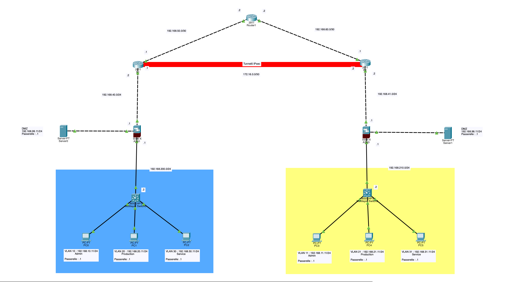

Concevoir et configurer un réseau LAN multi-sites avec trois sous-réseaux (Service / Production / Admin) par site, sécuriser les communications via tunnel IPSEC GRE et produire un réseau fonctionnel et sécurisé pour l’entreprise.
Capture de la maquette réseau réalisée sous Packet Tracer pour démontrer la configuration des VLAN, des routeurs et du tunnel IPSEC GRE.
Ce projet m'a permis de découvrir concrètement la sécurisation de réseaux LAN multi-sites. J'ai particulièrement appris à :
Parmi les principales difficultés rencontrées :
Cette expérience m'a permis de renforcer ma rigueur, ma méthodologie et ma compréhension des bonnes pratiques en sécurité réseau.